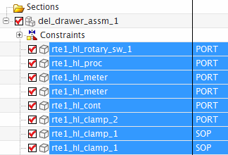
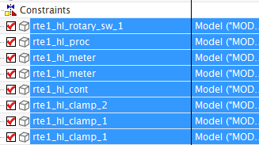

The devices in the top assembly were displayed with either their “PORT” or “SOP” reference sets so that you could WAVE-link the ports into the harness. Now that you have done that, you can change the reference sets on these devices back to MODEL.
Make sure your Work Part is still your own wiring harness subassembly.
In the Assembly Navigator, select all of the devices in the top assembly (except your own).

Right-click any of the highlighted nodes in the navigator and choose Replace Reference Set→MODEL.

Now all the reference sets of the components have been set to MODEL.
Close all parts without saving.